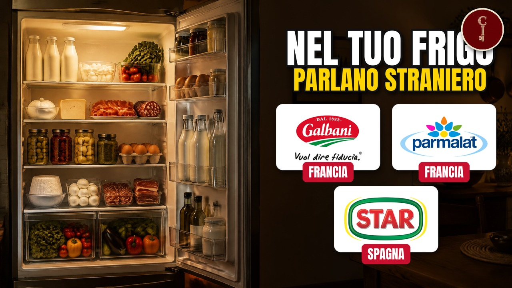

Italia
I 15 marchi del cibo che credi ITALIANI (ma non lo sono più)

Il video esce su YouTube a breve.
I 15 marchi del cibo che credi ITALIANI (ma non lo sono più) Il latte della colazione, la mozzarella, la bresaola, il dado, il lievito per la torta, i biscotti da inzuppare, il cono gelato: sono marchi nati in Italia, alcuni più di un secolo fa. Così buoni che dal resto del mondo sono venuti a comprarli. In questo video ne contiamo quindici, dal meno al più sorprendente, con chi li controlla oggi e la storia di come sono nati.
Le fonti, capitolo per capitolo
Solo le fonti che sostengono qualcosa detto nel video, capitolo per capitolo, nell'ordine in cui il video le usa.
Apertura
fatto-bene.com
FATTOBENE | Paneangeli Baking Powder15 · Parmalat
lactalis.com · aprile 2025
Lactalis - Rapport annuel 2024tharawat-magazine.com
Parmalatwallstreetitalia.com
Parmalat: crack, storia e rinascita, quotazione | WSIWikipedia
Calisto TanziWikipedia
Parmalat14 · Grom
ilpost.it
GROM è stata comprata da Unileverlexpress-franchise.com
È possibile aprire una gelateria Grom?openers.jp
Grom (openers.jp)tharawat-magazine.com
Interview with Federico Grom, Co-Founder, Grom, ItalyWikipedia
Grom (company)13 · Carapelli
ilfattoquotidiano.it
Olio, la Spagna si tiene Carapelli e Bertolli. Battuta l’italiana Coricelliilrestodelcarlino.it
Bonifiche Ferraresi, pronto il colpo. Riporta in Italia l’olio Carapellijust-food.com
Dcoop, Acesur team up to buy olive-oil rival DeoleoWikipedia
Bertolli12 · Filippo Berio e Sagra
fortuneita.com
Un secolo vissuto per l'olio d'olivanews.italianfood.net
China Bright Food buys Salov - Italianfood.netoliveoiltimes.com
Chinese Co. Buys Majority Stake in Filippo Berio Producersalov.com
Our history11 · Fiorucci
affaritaliani.it
Intervista ad Athos Maestri, a.d. di Fiorucciesmmagazine.com
Italy’s Cesare Fiorucci Gets New Ownerseurochocolate.com · 2015
Comunicato stampa Cesare Fioruccilivingstonepartners.com
Fiorucci changes ownership with Navigator Group and White Park Capitalsigma-alimentos (azurewebsites)
Sigma Alimentos Now Controls 100% of the Shares of Campofrio Food Group (comunicato)treccani.it
norcino - Vocabolario Treccani10 · Sperlari
Italia a Tavola
Negozio Sperlari - locale storico dal 1836The Legal 500 (Mondaq)
Recent mergers and acquisitions in Finland: Huhtamaki reorganises its confection sectorWikipedia
Sperlari9 · Caffarel
app.cibus.it
Caffarel – Cibus exhibitor profileIl Sole 24 Ore
Why Giandujotto di Torino is not yet IGPvaresenews.it
Lindor e Gianduiotto: Lindt si fonde con Caffarel8 · Rigamonti
Bolsamanía / Europa Press
JBS consolida su posición en Europa con la adquisición de la italiana King's Group por 82 millonesilgiornale.it
Rovagnati nell'orbita di RigamontiRigamonti Salumificio
Chi siamo - Rigamonti7 · Saiwa
Wikipedia
Saiwa6 · Paneangeli
company.cameo.it
Le nostre sedi e i nostri brand | cameofatto-bene.com
FATTOBENE | Paneangeli Baking PowderWikipedia
Cameo (azienda)5 · Star
alimarket.es
Gallina Blanca ya es de Agrolimen al 100%bluerating.com
Star, storia del dadoCatalonia Industry Suppliers
THE GB FOODS, SAstar.it
Note legalithegbfoods.com
GBfoods – History4 · Galbani
dairyreporter.com
Lactalis buys Galbani for Italian cheesefoodnavigator.com
Danone to focus on core businessesgalbani.it
La storiapaviafree.it
Italian brands : Galbani A quality brandtharawat-magazine.com
ParmalatWikipedia
Bel Paese (formaggio)3 · Perugina
L'Unione Sarda
Bacio Perugina, una passione che dura da cento anniWikipedia
Perugina2 · Melegatti
baincapital.com · 10 maggio 2021
Bain Capital acquires Valeo Foodsbusinesswire.com
Valeo Foods Group acquires Melegattiunionesarda.it · 2018
Melegatti: dal fallimento a 500mila pandori venduti in un batter d'occhio1 · Algida
corporate.magnumicecream.com
Demerger information - The Magnum Ice Cream Companycorporate.magnumicecream.com
FAQ - The Magnum Ice Cream Companydistribuzionemoderna.info
The Magnum Ice Cream Company: summer campaign with TV, digital, social and influencer marketingunilever.pk
CornettoWikipedia
AlgidaWikipedia
Cornetto (frozen dessert)Quelli che sono tornati
confectioneryproduction.com
Bauli acquires Motta and Alemagnadissapore.com
Gelati da bar: le novità del 2026emarketstorage.it (comunicato NewPrinces) · 2025
NewPrinces perfeziona l'acquisizione di Plasmon da Kraft Heinzgamaconsumer.com
Italy: Newlat acquires pasta firm Delverdemanufacturing.net · 2009
Bauli acquires Motta, Alemagna brandsmilanofinanza.it · 2019
Delverde torna italianaWikipedia
Bauliwikipedia.com
Angelo MottaChiusura
businesswire.com
Valeo Foods Group acquires Melegatticompany.cameo.it
Le nostre sedi e i nostri brand | cameoWikipedia
AlgidaFonti generali
Wikipedia
Carapelligamberorosso.it
La storia dei gelati AlgidaMateriali
Attribuzioni di immagini e video
Bresaola & Mozzarella (5824152348).jpg
Luca Nebuloni from Milan, Italy · CC BY 2.0
.jpg){kind=link}
Luca Nebuloni from Milan, Italy · CC BY 2.0
Oro saiwa.jpg
F Ceragioli · CC BY-SA 3.0

F Ceragioli · CC BY-SA 3.0
Bandiera al vento.jpg
Maupao70 · CC BY-SA 4.0

Maupao70 · CC BY-SA 4.0
Cremona, torrazzo 01.JPG
sailko · CC BY 2.5

sailko · CC BY 2.5
Caixas de leite da Parmalat em Governador Valadares MG.JPG
HVL · CC BY 3.0

HVL · CC BY 3.0
Mapa presença da Parmalat no mundo.svg
Ricardomarins29 · CC BY-SA 4.0

Ricardomarins29 · CC BY-SA 4.0
Parmalat Белгород.jpg
Лобачев Владимир · CC BY-SA 3.0

Лобачев Владимир · CC BY-SA 3.0
Parmalat Volvo 440 (17106398507).jpg
Bob Adams from Amanzimtoti, South Africa · CC BY-SA 2.0
.jpg){kind=link}
Bob Adams from Amanzimtoti, South Africa · CC BY-SA 2.0
Laval - Lactopôle 02.jpg
Fab5669 · CC BY-SA 4.0

Fab5669 · CC BY-SA 4.0
Mole Antonelliana from Piazza Statuto.jpg
Vale maio · CC BY-SA 3.0

Vale maio · CC BY-SA 3.0
Guido_Martinetti.jpg
Maxperot · CC BY-SA 3.0

Maxperot · CC BY-SA 3.0
Italian Gelato GROM, Shinjuku, Tokyo.jpg
Steve Nagata from Tokyo, Japan · CC BY 2.0

Steve Nagata from Tokyo, Japan · CC BY 2.0
GROM (3419687073).jpg
Ludovic Bertron from New York City, Usa · CC BY 2.0
.jpg){kind=link}
Ludovic Bertron from New York City, Usa · CC BY 2.0
Grom - piazza Galimberti Cuneo.jpg
Betty&Giò · CC BY-SA 4.0

Betty&Giò · CC BY-SA 4.0
Olive groves, grape vines and cypresses in Chiantishire (4054460424).jpg
bongo vongo · CC BY-SA 2.0
.jpg){kind=link}
bongo vongo · CC BY-SA 2.0
TavarnelleValdiPesaPanorama1.jpg
LigaDue · CC BY-SA 4.0

LigaDue · CC BY-SA 4.0
Palazzo Bertolli, lucca.JPG
sailko · CC BY 2.5

sailko · CC BY 2.5
Sasso olio di oliva.JPG
Daniel Ventura · CC BY-SA 3.0

Daniel Ventura · CC BY-SA 3.0
LOGO ACESUR CLAIM ESP POSITIVO 72ppp RGB Pantalla.jpg
Acesur1840 · CC BY-SA 4.0

Acesur1840 · CC BY-SA 4.0
HK 西環 Sai Ying Pun supermarket goods Filippo Berio n Borges Olive oil bottles August 2021 SS2.jpg
LAUICKWUIR loopwourawoe 01 · CC BY-SA 4.0

LAUICKWUIR loopwourawoe 01 · CC BY-SA 4.0
01 Lucca seen from Torre Guinigi.jpg
Myrabella · CC BY-SA 3.0

Myrabella · CC BY-SA 3.0
01 Die Piazza dell´Anfiteatro in Lucca.jpg
Holger Uwe Schmitt · CC BY-SA 4.0

Holger Uwe Schmitt · CC BY-SA 4.0
MassarosaPanorama.JPG
LigaDue · CC BY 3.0

LigaDue · CC BY 3.0
0902NorciaFlliAnsuini.JPG
Geobia · CC BY-SA 3.0

Geobia · CC BY-SA 3.0
Norcia piazza san benedetto.jpg
Hans Peter Schaefer, http://www.reserv-a-rt.de · CC BY-SA 3.0

Hans Peter Schaefer, http://www.reserv-a-rt.de · CC BY-SA 3.0
Santa Palomba 2015 by-RaBoe 005.jpg
© Ra Boe / Wikipedia · CC BY-SA 3.0 de

© Ra Boe / Wikipedia · CC BY-SA 3.0 de
Mortadella-1.jpg
Rainer Zenz at German Wikipedia · CC BY-SA 3.0

Rainer Zenz at German Wikipedia · CC BY-SA 3.0
Galatina "Latte e biscotto".jpg
Mannivu · CC BY-SA 4.0

Mannivu · CC BY-SA 4.0
Cremona piazza del Comune.jpg
Magagnini Carlo Alberto · CC BY-SA 4.0

Magagnini Carlo Alberto · CC BY-SA 4.0
Torrone di mandorle.jpg
Alberto Piso · CC BY-SA 2.0

Alberto Piso · CC BY-SA 2.0
Katjes Joghurt-Gums (0877).jpg
Raimond Spekking · CC BY-SA 4.0
.jpg){kind=link}
Raimond Spekking · CC BY-SA 4.0
Katjes-International_Logo_grüngelb.png
Katjes International GmbH & Co. KG · CC BY-SA 4.0

Katjes International GmbH & Co. KG · CC BY-SA 4.0
Sede Sperlari.jpg
Carlo Dani · CC BY-SA 4.0

Carlo Dani · CC BY-SA 4.0
Ugo nespolo, packaging del 150° anniversario del gianduiotto, 2015 (coll. caffarel).jpg
Sailko · CC BY-SA 4.0
.jpg){kind=link}
Sailko · CC BY-SA 4.0
Nocciola Piemonte IGP.jpg
WINELINKITALY - Barbara D'Agapiti · CC BY-SA 2.0

WINELINKITALY - Barbara D'Agapiti · CC BY-SA 2.0
Torino - Piazza Castello - panoramio.jpg
Michael Paraskevas · CC BY-SA 3.0

Michael Paraskevas · CC BY-SA 3.0
Kilchberg - Lindt & Sprüngli - Zürichsee - ZSG Wädenswil 2012-07-30 09-51-18.JPG
Roland zh · CC BY-SA 3.0

Roland zh · CC BY-SA 3.0
カファレル リバイバル小缶 ピンク.jpg
花梨0921 · CC BY-SA 4.0

花梨0921 · CC BY-SA 4.0
Lindt-Goldhasen (2008-04-12 a).JPG
Lothar Spurzem · CC BY-SA 2.0 de
.JPG){kind=link}
Lothar Spurzem · CC BY-SA 2.0 de
Antipasto di Bresaola.jpg
franzconde from Amsterdam, The Netherlands · CC BY 2.0

franzconde from Amsterdam, The Netherlands · CC BY 2.0
Valtellina-Panorama.jpg
Arnaldo Zitti · CC BY 2.5

Arnaldo Zitti · CC BY 2.5
5741Valtellina.jpg
Geobia · CC BY-SA 4.0

Geobia · CC BY-SA 4.0
Brisaula.jpg
Romano.massimiliano · CC BY-SA 4.0

Romano.massimiliano · CC BY-SA 4.0
Joesley Batista na CPMI da JBS 1 (cropped).jpg
Lula Marques/Agência PT · CC BY 2.0
.jpg){kind=link}
Lula Marques/Agência PT · CC BY 2.0
Boiada sendo conduzida pelos pantaneiros.jpg
Vicente Bissoni Neto · CC BY-SA 4.0

Vicente Bissoni Neto · CC BY-SA 4.0
Prosciutto di Montagnana.jpg
Superchilum · CC BY 4.0

Superchilum · CC BY 4.0
Via Galata Genova 01.jpg
Alessio Sbarbaro User_talk:Yoggysot · CC BY-SA 3.0

Alessio Sbarbaro User_talk:Yoggysot · CC BY-SA 3.0
Genova-IMG 2190.JPG
Twice25/Rinina25 · CC BY 2.5

Twice25/Rinina25 · CC BY 2.5
Capriata d'Orba-panorama1.jpg
Davide Papalini · CC BY-SA 3.0

Davide Papalini · CC BY-SA 3.0
Roma Palazzo Madama (Senato della Repubblica).jpg
Blackcat · CC BY-SA 4.0
.jpg){kind=link}
Blackcat · CC BY-SA 4.0
Cremona Torrazzo da via Solferino.JPG
Avemundi · CC BY-SA 3.0

Avemundi · CC BY-SA 3.0
Campus cameo a Desenzano del Garda.jpg
SimoneGhisleri · CC BY-SA 4.0

SimoneGhisleri · CC BY-SA 4.0
Laghi brianza.jpg
Marcobarci · CC BY-SA 4.0

Marcobarci · CC BY-SA 4.0
1 lira Italia 1957.jpg
Facquis · CC BY-SA 4.0

Facquis · CC BY-SA 4.0
136 Fàbrica Gallina Blanca, c. Sant Martí de l'Erm 5-7 (Sant Joan Despí), des del c. Ferrocarril.jpg
Enric · CC BY-SA 4.0
,_des_del_c._Ferrocarril.jpg){kind=link}
Enric · CC BY-SA 4.0
Galbani mozzarella with cherry tomatoes - Stierch.jpg
Missvain · CC BY 4.0

Missvain · CC BY 4.0
LogoGalbani-06122021.png
Galbani · CC BY-SA 4.0

Galbani · CC BY-SA 4.0
Citazione di anonimo.JPG
Spinoziano · CC BY-SA 3.0

Spinoziano · CC BY-SA 3.0
Fontana Maggiore, Perugia.jpg
Monica · CC BY 2.0

Monica · CC BY 2.0
Vestige Premiere Usine Buitoni (Sansepolcro).jpg
Adri08 · CC BY-SA 3.0
.jpg){kind=link}
Adri08 · CC BY-SA 3.0
Luisa Spagnoli shop.jpg
Luigi Chiesa · CC BY-SA 3.0

Luigi Chiesa · CC BY-SA 3.0
Perugina (17).jpg
Elekes Andor · CC BY 4.0
.jpg){kind=link}
Elekes Andor · CC BY 4.0
Pandoro_with_slice.jpg
Wittylama · CC BY-SA 4.0

Wittylama · CC BY-SA 4.0
Pandoro di Verona.jpg
Garonzi Stefania · CC BY-SA 4.0

Garonzi Stefania · CC BY-SA 4.0
Piazza Bra, Verona.jpg
Veronika Bashak · CC BY-SA 4.0

Veronika Bashak · CC BY-SA 4.0
Arena di Verona panorama.jpg
Assaf Yekuel · CC BY-SA 3.0

Assaf Yekuel · CC BY-SA 3.0
Palazzo di Cansignorio - Cortile del Tribunale (Verona).jpg
Didier Descouens · CC BY-SA 4.0
.jpg){kind=link}
Didier Descouens · CC BY-SA 4.0
Dublin - Ha'penny Bridge - 20150316165452.jpg
Dieglop · CC BY-SA 4.0

Dieglop · CC BY-SA 4.0
Classic italian pandoro (45983202242).jpg
N i c o l a from Fiumicino (Rome), Italy · CC BY 2.0
.jpg){kind=link}
N i c o l a from Fiumicino (Rome), Italy · CC BY 2.0
Cornetto_Algida_Ice_Cream.jpg
Remy Sharp from Brighton, United Kingdom · CC BY-SA 2.0

Remy Sharp from Brighton, United Kingdom · CC BY-SA 2.0
Giovanni Fassi ice cream shop (since.1880) in 2021.02.jpg
CAPTAIN RAJU · CC BY-SA 4.0
_in_2021.02.jpg){kind=link}
CAPTAIN RAJU · CC BY-SA 4.0
Campo di concentramento di Ferramonti (panoramio)
Salvatore Migliari · CC BY 3.0

Salvatore Migliari · CC BY 3.0
Napoli. Il Vesuvio ripreso dalla SS. 162, presso il Centro Direzionale.jpg
Giuseppe Guida · CC BY-SA 4.0

Giuseppe Guida · CC BY-SA 4.0
Cornetto Eiskrem.jpg
Naturpuur · CC BY 4.0

Naturpuur · CC BY 4.0
Cartell FRIGO al barri de Natzaret.jpg
B25es · CC BY-SA 4.0

B25es · CC BY-SA 4.0
CornettoFoto.jpg
adactio · CC BY 2.0

adactio · CC BY 2.0
Plasmon.JPG
Bramfab · CC BY-SA 3.0

Bramfab · CC BY-SA 3.0
Latina - Municipio 01.jpg
Pietro · CC BY-SA 4.0

Pietro · CC BY-SA 4.0
Museo etnografico oleggio scatola panettone motta.jpg
Settimioma · CC BY-SA 4.0

Settimioma · CC BY-SA 4.0
NestleHQ.jpg
Nestlé · CC BY 2.0

Nestlé · CC BY 2.0
Making_Pandoro_at_the_Laboratorio_Bauli.jpg
Festival della Scienza · CC BY-SA 2.0

Festival della Scienza · CC BY-SA 2.0
Homemade Panettone IMG 2507 (15895550849).jpg
N i c o l a from Fiumicino (Rome), Italy · CC BY 2.0
.jpg){kind=link}
N i c o l a from Fiumicino (Rome), Italy · CC BY 2.0
Capelli angelo.jpg
Popo le Chien · CC BY-SA 4.0

Popo le Chien · CC BY-SA 4.0
Fara San Martino.jpg
Zitumassin · CC BY 3.0

Zitumassin · CC BY 3.0
Logo Molinos Wiki2.png
Molinoscofinoi · CC BY-SA 4.0

Molinoscofinoi · CC BY-SA 4.0
Logo Newlat Food.jpg
Newlat Food · CC BY-SA 4.0

Newlat Food · CC BY-SA 4.0
Scene ricostruite
Alcune scene sono ricostruite con l'intelligenza artificiale. Non sono documenti né fotografie d'epoca.
Mappe
- Confini amministrativi italiani (openpolis/geojson-italy, dati ISTAT) · CC BY 4.0 · fonte